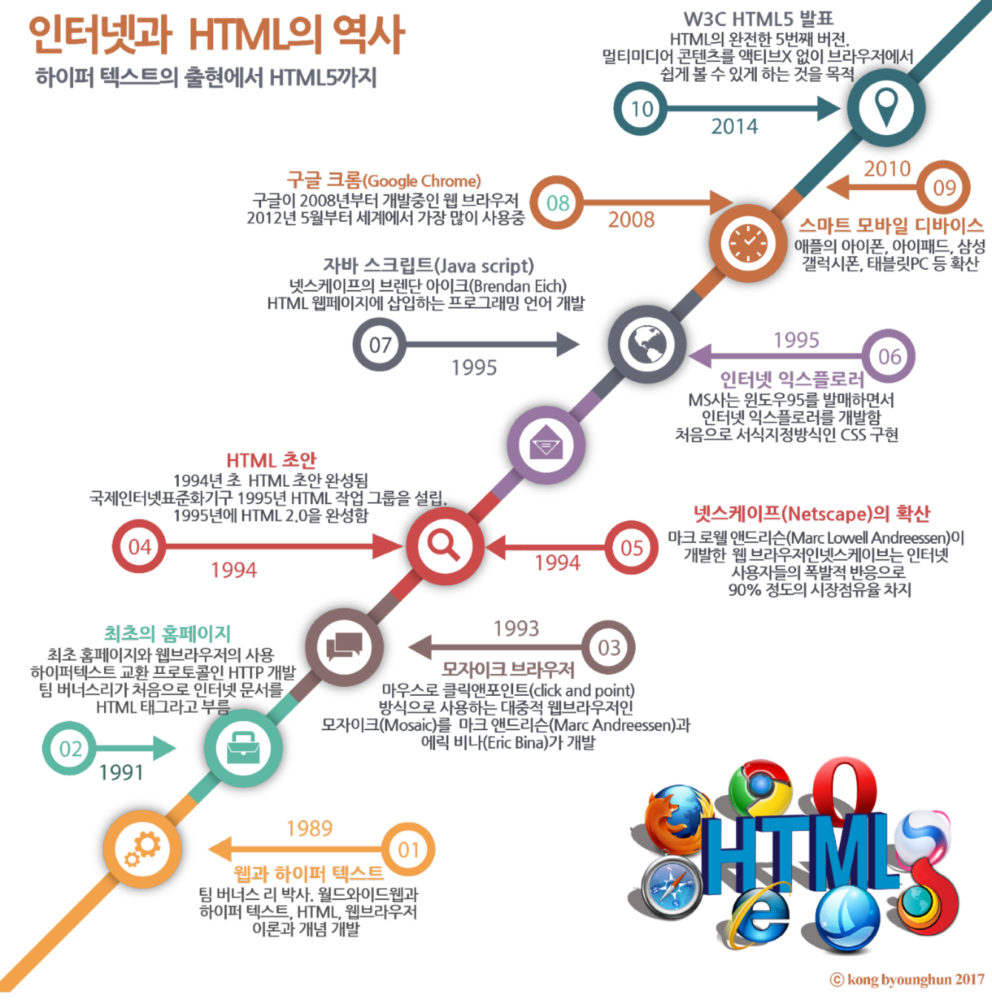

HTML
HTML
정의
HTML 은 Hyper Text Markup Language 약어로 HyperText(웹 페이지에서 다른 페이지로 이동할 수 있도록 하는 것) 기능을 가진 문서를 만드는 언어입니다.
역사

html 역사 사진
출현 배경
비표준 기술의 혼재, 웹 브라우저의 비 호환성
인터넷 기기의 다양화
새로운 범용 웹 표준의 필요성
문서 작성
HTML 문서의 작성은 일반 텍스트 에디터나 전용 에디터를 사용하면 누구나 쉽게 작성할 수 있습니다.
일반 텍스트 문서와 같이 작성하면 되며 저장시 확장자를 *.HTM 이나 *.HTML으로 저장하면 브라우저가 인터넷 문서임을 인식하고 브라우저 화면에 뿌려줍니다.
기본 형식
<html>
<head> <title>타이틀</title> </head> <body> 문서의 본문내용 </body> </html>
기능
웹 폼(Web Form)
오디오, 비디오(Audio, Video)
캔버스(Canvas)
SVG(Scalable Vector Graphic)
웹 스토리지(Web Storage)
웹 SQL 데이터베이스(Web SQL Database)
인덱스 데이터베이스(Indexed Database API)
파일 입출력(File I/O) – local file i/o
위치 정보 API(Geolocation API)
웹 워커(Web Worker)
웹 소켓(Web Socket)
오프라인 웹 애플리케이션(Offline Web Application)